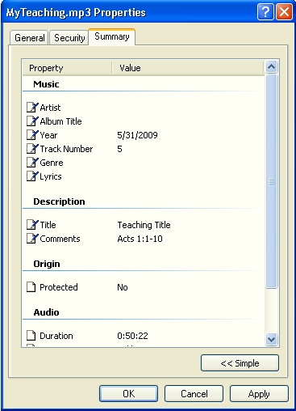

Bible Study Import will read mp3 from a directory and import selected into the BibleStudy component database tables.
Please make sure the BibleStudy Component is installed. It can be found at Joomla Oregon.
The component reads the ID3 tags from the mp3 and uses this information to populate the database.
 Title => Study Title
Year => Study Date "M/D/YYYY"
Track Number => Study Number
Comments => Scripture "Acts 1:1-10"